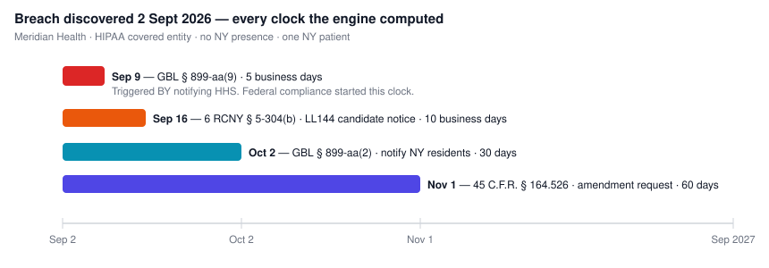
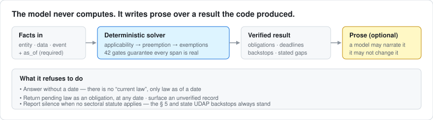

US federal and New York privacy obligations, each quoted verbatim from primary source and anchored to the hash of the bytes it was checked against.

This is not legal advice and carries no warranty of any kind. It is a research project. Parts of the corpus were assembled with AI assistance, and AI makes mistakes, as do people. Every output must be checked against the primary source by a qualified person before it is relied on. Each record carries its source URL, fetch date and content hash so that checking is possible. See the Apache 2.0 licence, sections 7 and 8.
A telehealth company incorporated in Delaware, offices in Austin. No New York office. No New York employees. One New York patient. It has a breach, and it notifies the Secretary of Health and Human Services the same day, which is the right thing to do.
Clocks running from 2026-09-08, earliest first 2026-09-15 5 business_days N.Y. Gen. Bus. Law § 899-aa(9) from: notification to the Secretary of Health and Human Services 2026-10-08 30 calendar_days 45 C.F.R. § 164.524(b)(2)(i) from: receipt of the access request 2026-10-08 30 calendar_days N.Y. Gen. Bus. Law § 899-aa(2) from: discovery of the breach 2026-11-07 60 calendar_days 45 C.F.R. § 164.526(a)(1) from: receipt of the amendment request
§ 899-aa(9) gives a covered entity five business days from notifying the Secretary to notify the New York Attorney General. Not five days from discovery. A company that files federally and then works its 30 and 60 day obligations has already missed the first one.
§ 899-aa attaches to holding a New York resident's private information. No office, no employees, no revenue floor appear anywhere in the text. One patient is enough.
45 C.F.R. § 160.203 makes HIPAA a floor, so more stringent state law survives alongside it. The engine resolves that posture from the record rather than assuming it.
Applicability, preemption, exemptions and dates are decided by deterministic code. A language model may narrate the answer. It cannot change it.

Verbatim or nothing. Every obligation is a character-for-character quotation from a stored primary source. 42 continuous-integration gates make a fabricated citation structurally impossible to commit.
Anchored to the bytes. Each record carries the hash of its source file and of the segmentation it was cut from, so a change underneath it cannot pass unnoticed.
Typed exemptions. Entity-level relief and data-level relief are different objects, because a covered entity exempt for one record is not exempt as an entity.
Preemption is a field, not a guess. Floor, ceiling, field, express partial or none. An unrecognised posture returns unresolved rather than the permissive answer.
Most of the engineering here went into the answers it declines to give. A confident answer over a gap is worse than a smaller answer that names the gap.
There is no current law here, only law as of a date. A query with no date is refused, and so is a malformed one: comparisons are string comparisons, so a typo would otherwise sort above every real date and quietly report law that is not yet in force. as_of: "not-a-date" → refused
The SAFE for Kids Act is enacted, final, and binds nobody until 25 January 2027. It routes to a watch feed that can never become an obligation at any as-of date, because status is checked before dates are. status: enacted_pending → watch feed only
Where no sectoral statute applies, the answer names the constraints that still do: FTC Act section 5, the state deceptive practices statute, and the entity's own published privacy notice, which is the one most often forgotten.
Coverage is declared before it is measured, so an instrument knows which duty categories are missing and says so inside the answer. The SAFE for Kids result is honest and incomplete: what "commercially reasonable and technically feasible" requires lives in a regulation this corpus does not hold.
It installs into Claude Desktop, so you type a question and get back cited answers with computed dates. There is a terminal command too, if you prefer one.
Node is the program that runs this. Go to nodejs.org and download the version marked LTS, then click through the installer. Version 20 or newer. Nothing to configure.
On a Mac, open Terminal, type cd followed by a space, then drag the folder
from Finder into the window and press Return. On Windows, open the folder, click the address
bar, type cmd and press Enter.
The first installs what it needs. The second finds the Claude Desktop settings file on your computer and adds this to it. Then quit Claude Desktop completely and reopen it.
The simplest check is to ask a question you know the answer to and see whether it cites a statute or answers from general knowledge.
We are a telehealth company in Texas with one patient in New York. We had a breach on 8 September and notified HHS the same day. What are our deadlines?
It should come back with five business days to the New York Attorney General under § 899-aa(9), and explain that notifying HHS is what started that clock.
This checks five things and names the one that failed rather than saying "error".